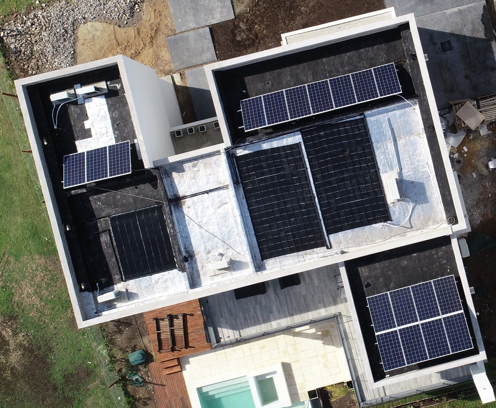

La Cámara de Diputados provincial aprobó la adhesión parcial a la Ley Nacional N° 27.424, que establece el Régimen de Fomento a la Generación Distribuida de Energía Renovable integrada a la Red Eléctrica Pública, durante la sesión del 13 de mayo con más de dos tercios de los votos a favor y ahora se aguarda la decisión del Senado. La aceptación por parte de las autoridades bonaerenses llega tras más de tres años y varios intentos de diversos bloques políticos por acatar la Ley Nacional desde su publicación en el Boletín Oficial de la República Argentina en diciembre del 2017.
En caso de que el Senado provincial también dé el visto bueno, Buenos Aires se convertirá en la décimo tercera provincia en adherir a una ley que ya cuenta con dos distribuidoras inscriptas en su territorio, como lo son la Empresa Distribuidora y Comercializadora Norte S.A. (Edenor) y la Empresa Distribuidora y Comercializadora Sur S.A. (Edesur). Rosío Antinori, diputada bonaerense por parte de Juntos por el Cambio e impulsora de la adhesión, destacó que «las energías renovables y la mayoría de las iniciativas ambientales conforman una agenda emergente que no suele encontrar el espacio dentro de la política para su debate». «No suelen ser tomadas como prioridad y por eso celebramos con mayor entusiasmo la aprobación del proyecto de Generación Distribuida para la Provincia de Buenos Aires», agregó.
«Estoy muy contenta, representa el trabajo de tres años de hablar con todos los actores y de acompañar a los bonaerenses que estaban esperando esta ley», le comentó Antinori a Energía Estratégica. «Sé que esto significa nuevos puestos de trabajo, hacer que las PyMEs sean más competitivas, romper con el actual paradigma energético y que aparezca el usuario generador, un sujeto activo que se involucrará mucho más, además de mejorar y ayudar al medio ambiente. Es una ley muy beneficiosa para la provincia de Buenos Aires», manifestó.
Esta normativa nacional actualmente cuenta con más de 437 usuarios generadores conectados a la red a lo largo de todo el país, y con una capacidad instalada total de 4,7 MW, según el último reporte de avance al cierre de abril por parte de la Secretaría de Energía. Incluso semanas atrás, Nicolás Biurrún, Coordinador de Generación Distribuida de la Dirección Nacional de Generación Eléctrica, señaló que desde el organismo prevén, aunque con una mirada conservadora, que “en 2021 puede crecer el doble de lo actual, es decir, 4 MW más”. Cabe recordar que el régimen de fomento propone alcanzar 1000 MW de potencia a partir de esta alternativa de generación. Esta meta permitirá que millones de usuarios se conviertan además en generadores y puedan vender el excedente de su energía a las redes de distribución.
 Instalación residencial en la Provincia de Buenos AiresFotografía propia de instalación realizada por Solar.Ing SAS (no pertenece a la publicación original)
Volver a la página de Novedades · o regresar a la página de Inicio